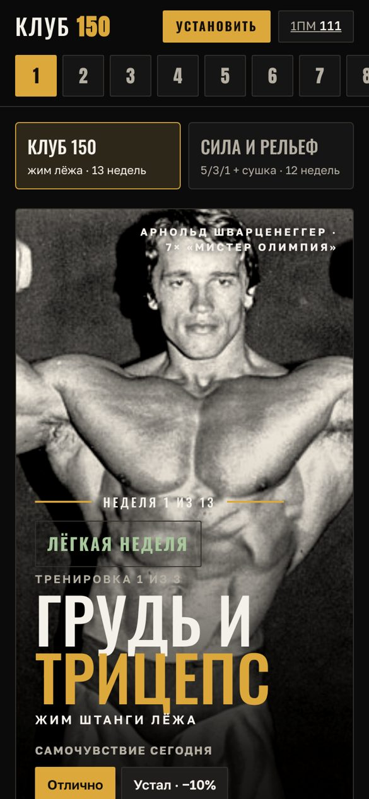

80 кг × 3 × 5
Точные веса на каждый подход
Вводишь свой максимум — программа считает вес каждого подхода и показывает раскладку блинов на штанге. Есть блины 2,5 кг — шаг станет 5 кг.
Программа жима лёжа
Программа в телефоне: какие подходы делать сегодня, какие блины вешать на штангу и сколько отдыхать. Цель клуба — жим 150 кг. Через 13 недель — проверка нового максимума и следующий круг.

Что внутри
Вводишь свой максимум — программа считает вес каждого подхода и показывает раскладку блинов на штанге. Есть блины 2,5 кг — шаг станет 5 кг.
Один подход на весь экран, большая кнопка «Сделал подход», разминка, отдых запускается сам. Можно включить голосовые подсказки.
Сигналы за 3 секунды до конца, экран не гаснет, пока идёт тренировка.
Записываешь последний подход — приложение считает расчётный максимум и отмечает рекорды.
Серия недель без пропусков и тренировки в календаре телефона с напоминанием за 30 минут.
Как устроены 13 недель
Нагрузка идёт волнами: две-три рабочие недели, потом облегчённая, чтобы восстановиться. Каждые 4 недели — разгрузка. Перед проверкой максимума — подводка. Высота столбика — самый тяжёлый подход жима в процентах от максимума.
Работает без интернета
В подвальном зале нет связи — программа всё равно откроется. Отметки и рекорды хранятся только в твоём телефоне.
Вторая программа
Вопросы
Да, если ты уже знаешь технику жима, приседа и становой и тренируешься хотя бы несколько месяцев. Если только начинаешь, сначала поставь технику с тренером.
150 кг — цель клуба, а не обещание. За один круг сила растёт на несколько процентов. На 13-й неделе находишь новый максимум и проходишь программу заново — старый максимум становится рабочим весом.
Гриф, блины, скамья (ровная и наклонная), EZ-гриф и гантели. Нет стоек для приседа — у упражнения есть замена с гантелью.
Только в браузере твоего телефона. Никакой регистрации и серверов. Раз в неделю сохраняй резервную копию во вкладке «Клуб».
Да. Код программы открыт на GitHub.
Открой программу, введи свой максимум — и первая тренировка уже готова.